Generated by ChatGPT on 2025-12-01
本課程聚焦於如何使用 Entropica Labs 的 el-loom 套件，從理論設計到數值實驗，完整走過「自訂量子糾錯碼（quantum error-correcting code, QEC）」的研究流程。內容假設讀者已熟悉穩定子碼（stabilizer codes）、噪聲通道、邏輯門與閾值分析等基礎概念。
本章將分為以下部分：
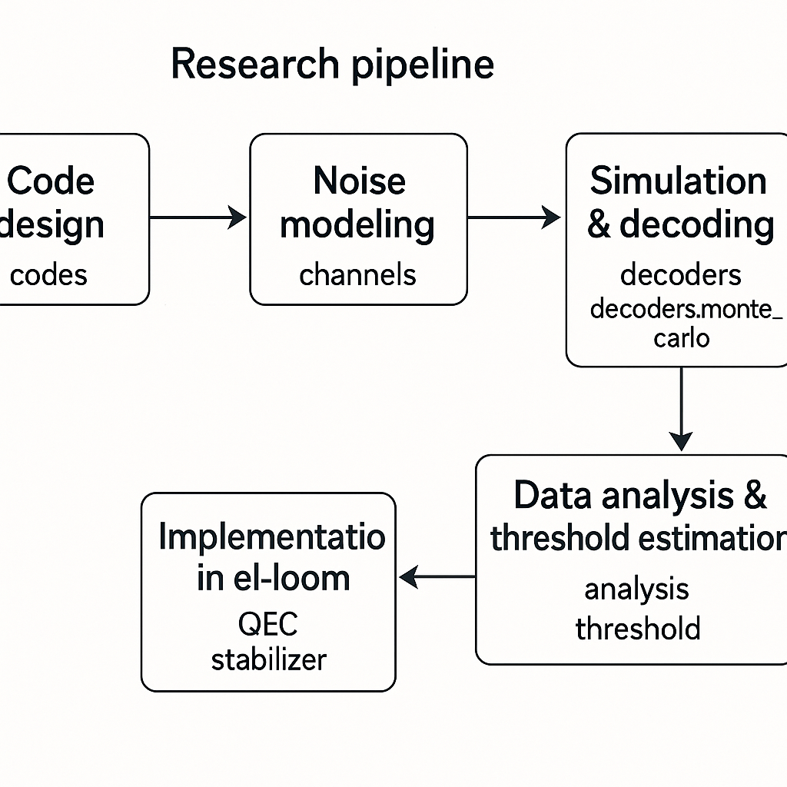
博士階段與進階研究者在 QEC 領域常見的研究問題包括：
這些問題的共同需求是：能快速、系統性地把「抽象的碼結構＋噪聲模型」轉成「可重現的數值實驗」。el-loom 正是為此設計的一套 Python 工具，重點在於：
stim 等高效模擬器整合，進行大規模蒙地卡羅模擬。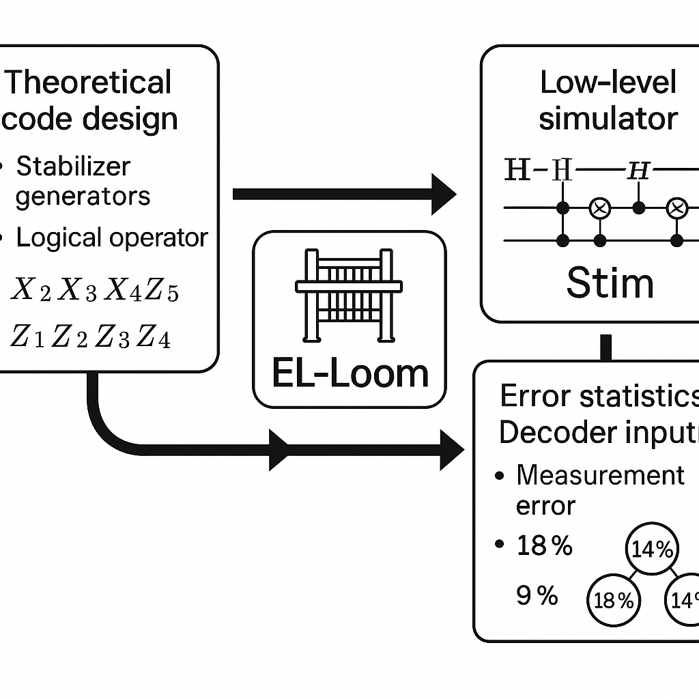
一個 穩定子碼 定義在 \(n\) 個物理量子比特上，其穩定子群 \(S\) 為 \(n\)-粒子 Pauli 群中的一個阿貝爾子群，且不包含 \(-I\)。令 \(S = \langle S_1,\dots,S_{n-k} \rangle\)，則其編碼空間為 \[ \mathcal{C} = \{ \lvert \psi \rangle \in (\mathbb{C}^2)^{\otimes n} : S_i \lvert \psi \rangle = \lvert \psi \rangle,\, \forall i \} . \] 若 \(S\) 的生成元線性獨立（在 Pauli 群上 modulo \(\pm 1\)），則編碼 \(k = n - \text{rank}(S)\) 個邏輯比特。
邏輯 Pauli 生成元可選取為 \[ \{ \overline{X}_1,\dots,\overline{X}_k,\overline{Z}_1,\dots,\overline{Z}_k \} \] 使得：
在實作時，我們常使用 binary symplectic representation 來表示 Pauli： \[ P = i^\kappa X^{\mathbf{a}} Z^{\mathbf{b}} \quad \leftrightarrow \quad (\mathbf{a} \mid \mathbf{b}) \in \mathbb{F}_2^{2n}, \] 其中 \(\mathbf{a},\mathbf{b} \in \mathbb{F}_2^n\)；第 \(j\) 比特若為 \(X\) 則 \(a_j=1,b_j=0\)，若為 \(Z\) 則 \(a_j=0,b_j=1\)，若為 \(Y\) 則 \(a_j=b_j=1\)，若為 \(I\) 則 \(a_j=b_j=0\)。
兩個 Pauli \(P,Q\) 的（反）對易性由辛內積決定： \[ P Q = (-1)^{\langle P,Q\rangle} Q P, \] 其中 \[ \langle (\mathbf{a}\mid\mathbf{b}), (\mathbf{c}\mid\mathbf{d}) \rangle = \mathbf{a}\cdot\mathbf{d} + \mathbf{b}\cdot\mathbf{c} \in \mathbb{F}_2. \]
因此，一個穩定子碼可由一個 \((n-k) \times 2n\) 的二元矩陣 \[ H_S = [A\mid B] \] 來表示，其中每一列對應一個穩定子生成元的 Pauli 向量表示。
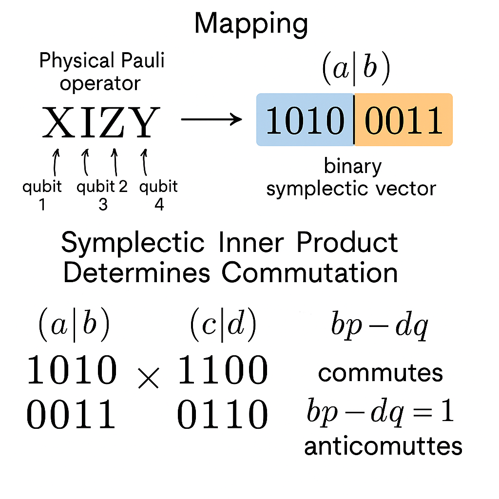
在 el-loom 中，核心抽象並非只是一個靜態的 \(H_S\)，而是：
具體到 Python，典型流程（以 pseudo-code 表示）如下：
from loom import codes, circuits, layouts
# 1. 定義 qubit layout (可 1D, 2D, graph-based)
layout = layouts.CustomLayout(qubits=range(n), connectivity=edges)
# 2. 定義 stabilizer 與 logical Pauli
stabilizers = [
"X0 X1 X3 X4", # textual Pauli representation
"Z1 Z2 Z4 Z5",
# ...
]
logical_x = ["X0 X2 X4", ...]
logical_z = ["Z1 Z3 Z5", ...]
code = codes.StabilizerCode(
n_qubits=n,
stabilizers=stabilizers,
logical_x=logical_x,
logical_z=logical_z,
layout=layout,
)
# 3. 從 code 構造 syndrome measurement circuit
meas_circuit = circuits.SyndromeMeasurementCircuit.from_code(code)
實際 API 名稱請以官方文件為準，上述示例只展示「抽象層級」。核心思想是：
為了示範，我們考慮一個簡化的 9-qubit planar surface code patch。物理 qubit 排列成 \(3\times3\) 方格：
q0 q1 q2 q3 q4 q5 q6 q7 q8
對於此簡化示例，設計 4 個 \(Z\)-type plaquette 穩定子與 4 個 \(X\)-type star 穩定子（為了示範，這裡採一個稍不標準但結構清楚的版本）。
顯然，各 \(Z\)-type 彼此對易，各 \(X\)-type 彼此對易，而任意一個 \(X\)-type 與任意一個 \(Z\)-type 的重疊 qubit 數為偶數（0,2,4），故亦對易。總共有 8 個獨立生成元，但其中一個整體相乘關係可能導致 rank < 8；假設最後 rank 為 8，則 \[ k = n - \text{rank}(S) = 9 - 8 = 1, \] 是一個 \([[9,1,d]]\) code。最小距離 \(d\) 約為 3（對應穿越 patch 的 string-like 邏輯算符）。
將上述 8 個穩定子轉成 Pauli 向量表示，建立 \(H_S\)： \[ H_S = \begin{bmatrix} \mathbf{a}^{(X)}_1 & \mathbf{b}^{(X)}_1\\ \vdots & \vdots\\ \mathbf{a}^{(X)}_4 & \mathbf{b}^{(X)}_4\\ \mathbf{a}^{(Z)}_1 & \mathbf{b}^{(Z)}_1\\ \vdots & \vdots\\ \mathbf{a}^{(Z)}_4 & \mathbf{b}^{(Z)}_4 \end{bmatrix} \in \mathbb{F}_2^{8\times 18}. \]
對於任意候選邏輯 Pauli \(L = (\mathbf{a}_L\mid\mathbf{b}_L)\)，它需滿足：
距離 \(d\) 則是所有 非穩定子 邏輯 Pauli 中最小的 Pauli weight： \[ d = \min_{L \in N(S)\setminus S} \mathrm{wt}(L), \] 其中 \(N(S)\) 為 normalizer。
在實作上，可利用高效 binary linear algebra（numpy 或 rust 實作）搜尋所有重量 \(\le d_{\max}\) 的 Pauli，檢查是否屬於 normalizer \& 非穩定子。el-loom 通常會提供類似：
StabilizerCode 結構，自動計算 \(k\)、距離估計等。qecsim, stim）互通。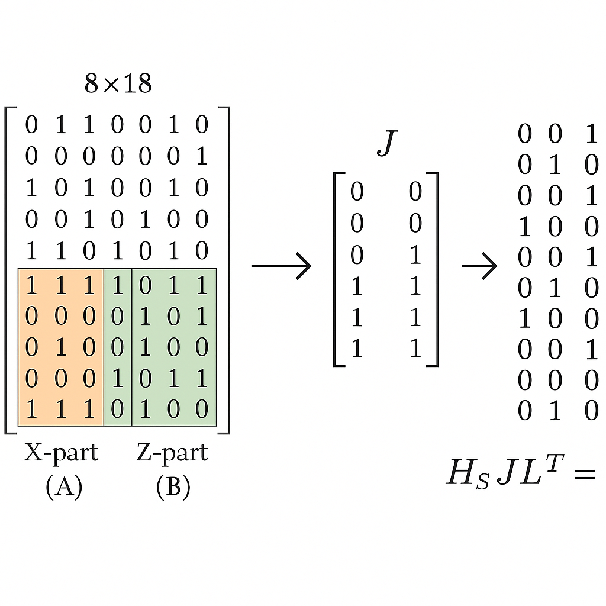
對應上例，可以這樣在 el-loom 中表達（使用概念性範例）：
from loom import codes, layouts
# 1. 定義 3x3 grid layout
coords = {
0: (0, 0), 1: (0, 1), 2: (0, 2),
3: (1, 0), 4: (1, 1), 5: (1, 2),
6: (2, 0), 7: (2, 1), 8: (2, 2),
}
layout = layouts.Grid2DLayout(coords)
# 2. 穩定子列表（文字 Pauli 表示）
stabilizers = [
"X0 X1 X3 X4",
"X1 X2 X4 X5",
"X3 X4 X6 X7",
"X4 X5 X7 X8",
"Z0 Z1 Z3 Z4",
"Z1 Z2 Z4 Z5",
"Z3 Z4 Z6 Z7",
"Z4 Z5 Z7 Z8",
]
# 3. 選擇一組邏輯 Pauli（示意）
logical_x = ["X0 X3 X6"]
logical_z = ["Z2 Z5 Z8"]
code = codes.StabilizerCode.from_pauli_strings(
n_qubits=9,
stabilizers=stabilizers,
logical_x=logical_x,
logical_z=logical_z,
layout=layout,
)
對這類 code，el-loom 通常會提供方法來：
在 QEC 理論分析中，我們通常假設 局域獨立噪聲（local stochastic noise）。在一個單步（time slice）內，每一個受控物理操作（閘、量測、idle）都可能伴隨獨立噪聲通道： \[ \mathcal{E}(\rho) = (1-p)\rho + \sum_i p_i E_i \rho E_i^\dagger, \] 常見簡化為：
在更實際的硬體場合，也會考慮 amplitude damping、dephasing、crosstalk 等非 Pauli 噪聲，但在 Pauli twirling approximation 下，常用 Pauli channel 近似，便於與 Stim 這類 Pauli 模擬器接軌。
el-loom 通常透過一個「噪聲規則集」來描述：
概念性範例：
from loom import noise
noise_model = noise.NoiseModel()
# 單比特 gate depolarizing
noise_model.add_gate_noise(
gate_type="H",
noise="depolarizing",
p=1e-3,
)
# CNOT 的二比特 depolarizing
noise_model.add_gate_noise(
gate_type="CNOT",
noise="two_qubit_depolarizing",
p=2e-3,
)
# 量測錯誤
noise_model.add_measurement_noise(
basis="Z",
p_meas=5e-3,
)
對應到理論分析，我們希望保證 model 中的 noise channel \(\mathcal{E}_{\text{hardware}}\) 與理論假設 \(\mathcal{E}_{\text{theory}}\) 在 diamond norm 上接近： \[ \|\mathcal{E}_{\text{hardware}} - \mathcal{E}_{\text{theory}}\|_\diamond \ll 1, \] 或至少在實驗設計中清楚說明採用之近似（如 Pauli twirling）。
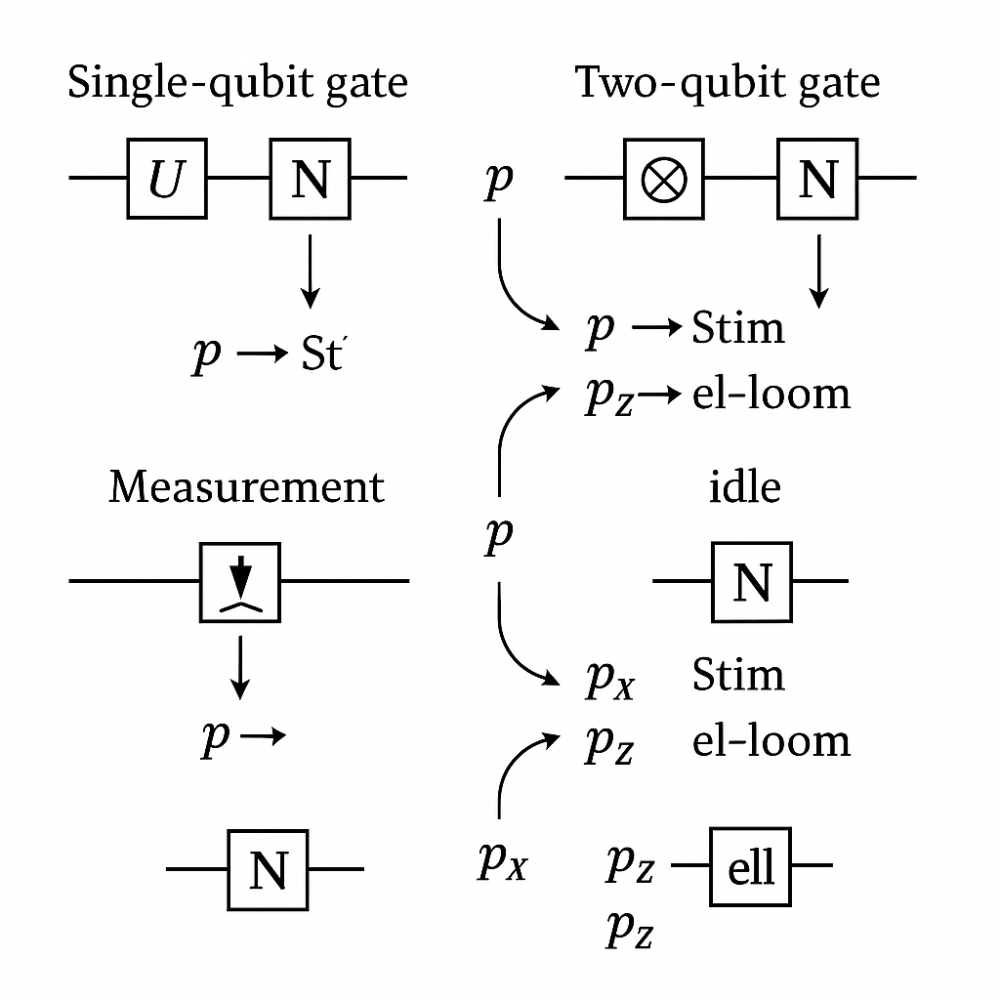
QEC 通常以 循環（cycle） 為單位：每個 cycle 執行一次完整的 syndrome measurement 序列。從邏輯態 \(\rho_L\) 開始，經過 \(T\) 個 cycle 後： \[ \rho_L^{(T)} = (\mathcal{R}\circ\mathcal{M}\circ\mathcal{N})^T (\rho_L), \] 其中：
在 el-loom 的設計裡，會以「repeated circuit」或「cycle template」方式實作：
from loom import circuits
cycle_circuit = circuits.SyndromeMeasurementCircuit.from_code(code)
# 疊加噪聲
noisy_cycle = cycle_circuit.with_noise(noise_model)
# 重複 T 次
T = 100
full_circuit = noisy_cycle.repeat(T)
此種 time-structured circuit 再交給 Stim 等底層模擬器，即可獲得對應長時間演化下的邏輯錯誤統計。
對於一個穩定子 \(S = \bigotimes_{j=1}^n P_j\)（其中 \(P_j\in\{I,X,Y,Z\}\)），典型的 syndrome 量測電路如下：
我們可形式化地寫出 Z-type case 的測量算符： \[ M_S = \sum_{s=\pm 1} s \, \Pi_s, \] 其中 \[ \Pi_s = \frac{1}{2}(I + sS) \] 是投影到 \(S\) 本徵值 \(s\) 的 projector，被 ancilla 的演化與測量實現。錯誤傳播的重點在於 CNOT 的 Heisenberg 圖像：
因此，一個在 ancilla 上的 \(X\) 錯誤可透過 CNOT 傳到所有 target qubit 上，反之亦然。這就是為何 syndrome circuit 排程與 ancilla reuse 會嚴重影響 correlated errors 之結構。
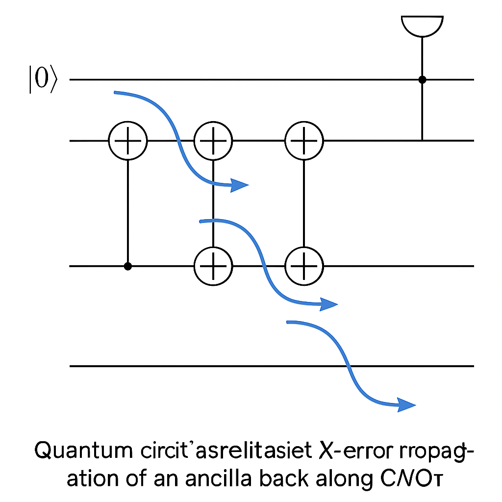
, followed by multiple CNOTs (data as control to ancilla as target), then measurement. Overlaid arrows indicate propagation of an X error on ancilla back along CNOTs to data qubits.">
el-loom 提供兩種典型策略：
一個手動指定的示意：
from loom import circuits
builder = circuits.CircuitBuilder(code)
# 為某個 Z-type stabilizer S_1 設計量測電路
anc = builder.new_ancilla(init="0")
# round 1: CNOTs on disjoint pairs
builder.cnot(control=0, target=anc) # Z on data 0
builder.cnot(control=3, target=anc) # Z on data 3
# round 2: next layer
builder.cnot(control=1, target=anc)
builder.cnot(control=4, target=anc)
# measure ancilla in Z
builder.measure(anc, basis="Z")
syndrome_circuit = builder.to_circuit()
利用這種 builder 介面，可以針對：
並可將這個「局部 stabilizer 量測電路」複製到所有 face/star，組成一個完整 cycle。
給定一個 Pauli 錯誤 \(E\)，其 syndrome \(s(E) \in \mathbb{F}_2^{n-k}\) 由 \[ s_i(E) = \begin{cases} 0, & \text{if } [E, S_i] = 0,\\ 1, & \text{if } \{E, S_i\} = 0, \end{cases} \] 或等價表示為 \[ s(E) = H_S J E^\top \in \mathbb{F}_2^{n-k}, \] 其中 \(E\) 以 binary symplectic 向量表示。
解碼器本質上是一個 map \[ \mathcal{D}: \mathbb{F}_2^{n-k} \to \mathcal{P}_n / S, \] 在給定 syndrome 後，輸出一個恢復操作 \(R\) 的等價類。對邏輯錯誤率感興趣的是 \(R E \notin S\) 的機率（即發生非平凡邏輯錯誤）。
假設每個 cycle 之噪聲強度為 \(p\)，我們關心的是： \[ p_L(p, d, T) = \Pr[\text{logical error after } T \text{ cycles}]. \] 蒙地卡羅流程如下：
利用大數法則，估計 \[ \hat{p}_L = \frac{N_{\text{logical error}}}{N_{\text{trials}}} \] 並對不同 \(p\) 與 \(d\) 取樣，進行閾值分析。
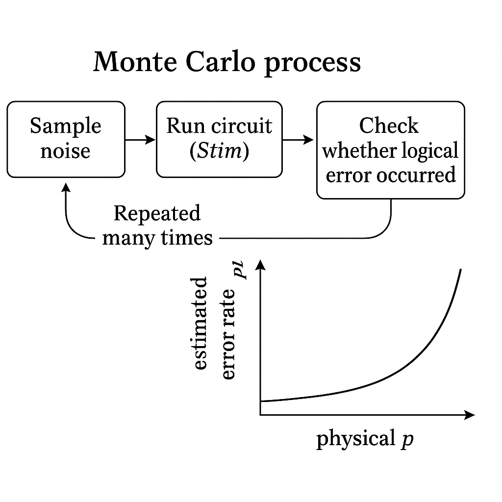
el-loom 支援多種解碼器掛接方式，包括：
PyMatching）。設定流程範例：
from loom import decoders, simulate
decoder = decoders.MWPMDecoder.from_code(code)
sim = simulate.Simulator(
code=code,
cycle_circuit=cycle_circuit,
noise_model=noise_model,
decoder=decoder,
)
results = sim.run(
p=5e-3,
n_trials=10_000,
n_cycles=100,
)
print(results.logical_error_rate)
在高階研究中，重點通常不是單一點的 \(p_L\)，而是：
一個 QEC code family \(\{\mathcal{C}_d\}\)（如距離 \(d=3,5,7,\dots\) 之 surface code）在某種噪聲模型下有閾值 \(p_{\text{th}}\)，若存在 \(p_{\text{th}} > 0\) 使得： \[ \forall\, p < p_{\text{th}}: \quad \lim_{d\to\infty} p_L(p,d) = 0. \] 另一方面，若 \(p > p_{\text{th}}\)，則 \(\liminf_{d\to\infty} p_L(p,d) > 0\)。
在數值實驗中，常假設近閾值區域遵守 scaling ansatz： \[ p_L(p,d) \approx f\left( (p-p_{\text{th}}) d^{1/\nu} \right), \] 其中 \(\nu\) 為相關長度臨界指數，\(f\) 為某 universal scaling function。對 fixed \(d\) 掃描 \(p\)，再對不同 \(d\) 作 collapse 分析，可同時估計 \(p_{\text{th}}\) 與 \(\nu\)。
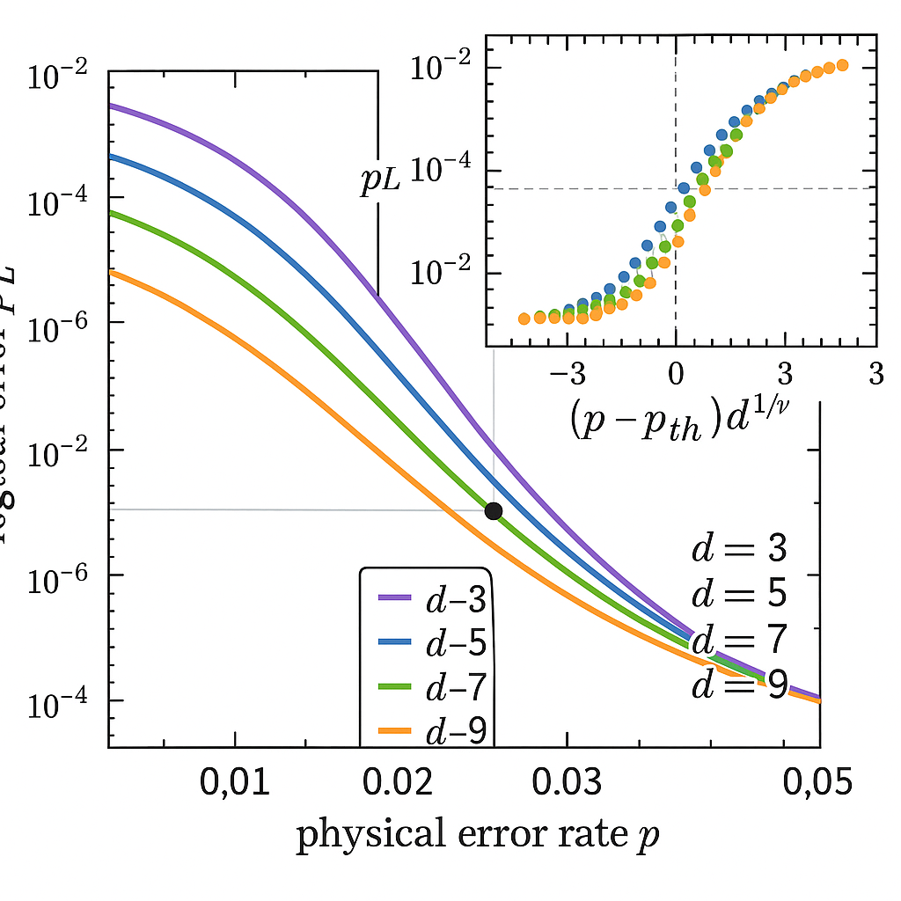
規劃一個完整的閾值研究通常需要：
pandas.DataFrame）以利分析。
在 el-loom 中可以利用 loops + config 驅動：
from loom import codes, simulate, decoders
distances = [3, 5, 7]
phys_ps = [2e-3, 3e-3, 4e-3, 5e-3]
records = []
for d in distances:
code_d = codes.SurfaceCode(distance=d) # 或自訂家族生成
decoder_d = decoders.MWPMDecoder.from_code(code_d)
sim_d = simulate.Simulator(
code=code_d,
cycle_circuit=code_d.default_cycle_circuit(),
noise_model=noise_model,
decoder=decoder_d,
)
for p in phys_ps:
res = sim_d.run(
p=p,
n_trials=20_000,
n_cycles=round(d), # 或更複雜的 T(d) 選擇
)
records.append({
"distance": d,
"p_phys": p,
"p_log": res.logical_error_rate,
"stderr": res.stderr,
})
為了避免「在閾值附近需要非常多樣本」的問題，常採用 adaptive sampling 或 importance sampling，el-loom 也可能提供：
--count-logical-errors / --sample 高效統計介面。當得到 \(p_L(d,p)\) 的資料後，數學上要處理：
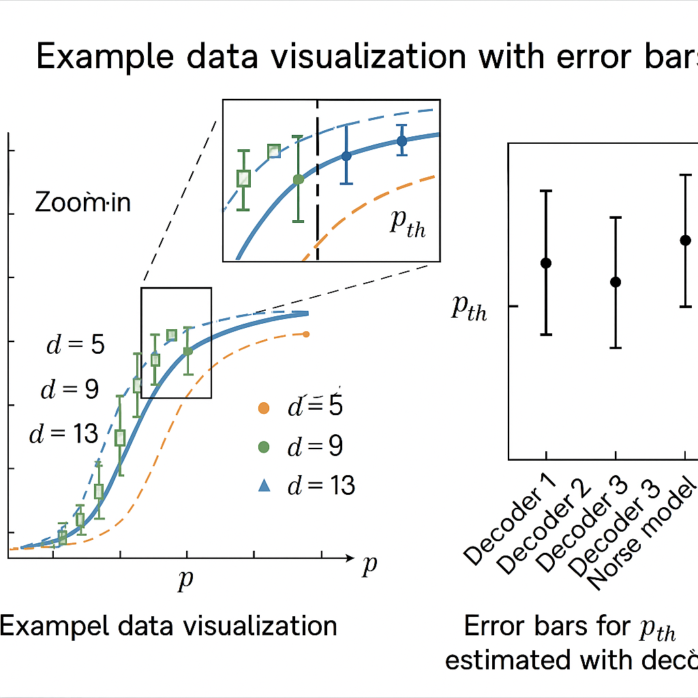
考慮一個具體研究問題：
給定一個硬體噪聲模型，其 \(Z\)-錯誤遠多於 \(X\)-錯誤（如 dephasing-dominated noise），希望設計一個在固定 qubit 數下最小化長時間邏輯錯誤率的穩定子碼。
數學上，我們可以將噪聲通道 parameterize 成： \[ \mathcal{E}(\rho) = (1-p_Z - p_X)\rho + p_X X\rho X + p_Z Z\rho Z \] 並假設 \(p_Z \gg p_X\)。對一個代碼 \(\mathcal{C}\)，可定義「X-type distance」與「Z-type distance」：
在 \(p_Z \gg p_X\) 下，我們希望 \(d_X \gg d_Z\)，即對 dominating noise 方向拉高距離。
在 el-loom 中，可以設計一個 parametric code family：
例如 rectangular surface code 中： \[ d_X = L_x, \quad d_Z = L_y \] （視具體邊界選擇而定），則在 \(p_Z \gg p_X\) 時可選擇 \(L_x \gg L_y\) 以優化。
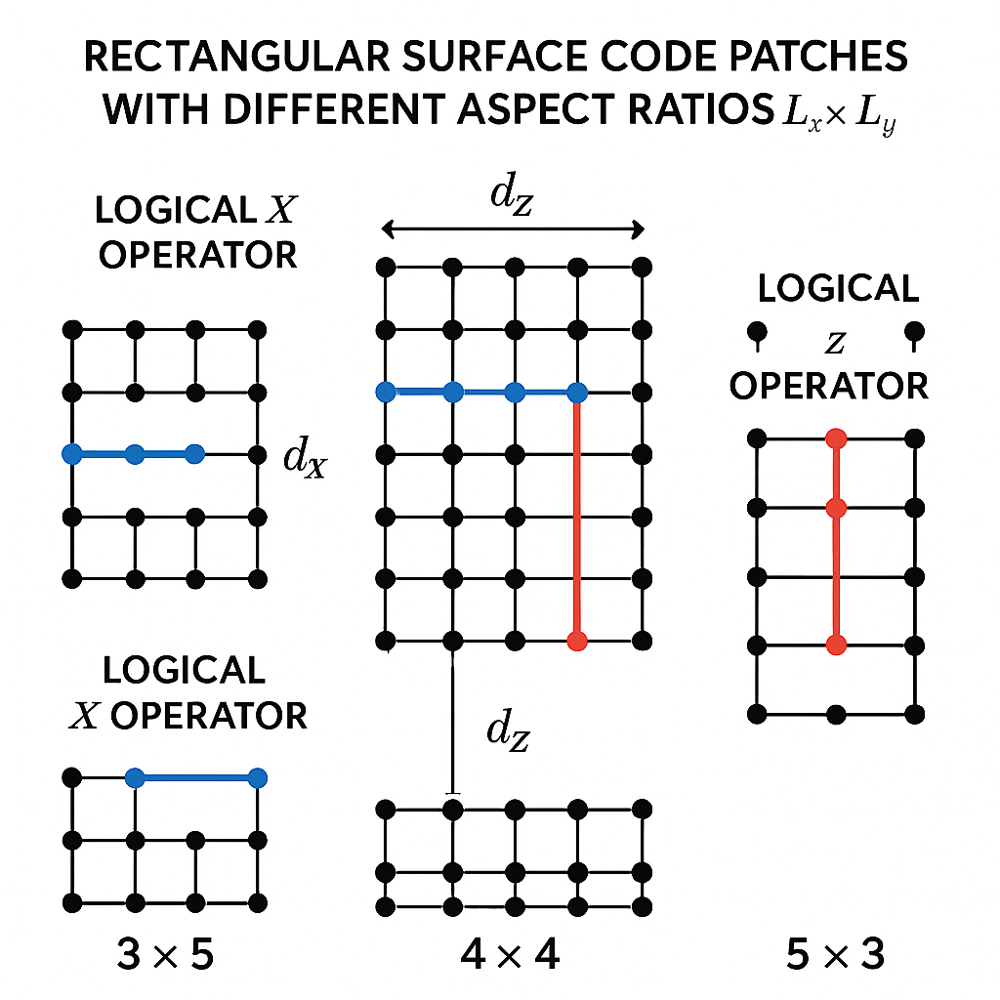
在 el-loom 內，可這樣 parametrize：
def make_rect_surface(Lx, Ly):
return codes.SurfaceCode(
size_x=Lx,
size_y=Ly,
boundaries=("rough", "smooth"), # example
)
# 搜尋在固定 qubit 數下的最佳 Lx, Ly
budget = 100 # qubit budget
candidates = []
for Lx in range(3, 11, 2):
for Ly in range(3, 11, 2):
code = make_rect_surface(Lx, Ly)
if code.n_qubits <= budget:
candidates.append((code, Lx, Ly))
對每個候選 \((L_x,L_y)\) 之 code instance，我們可：
官能定義為例如： \[ F(\mathcal{C}) = p_L(p_X,p_Z, T; \mathcal{C}), \] 以「越小越好」為優化目標。在 el-loom 的 Python 環境中可直接寫：
best = None
for code, Lx, Ly in candidates:
decoder = decoders.MWPMDecoder.from_code(code)
sim = simulate.Simulator(
code=code,
cycle_circuit=code.default_cycle_circuit(),
noise_model=noise_model,
decoder=decoder,
)
res = sim.run(
p=None, # 這裡可直接以 p_X, p_Z 傳入
p_X=1e-4,
p_Z=1e-3,
n_trials=50_000,
n_cycles=200,
)
score = res.logical_error_rate
if (best is None) or (score < best["score"]):
best = {
"code": code,
"Lx": Lx,
"Ly": Ly,
"score": score,
}
print("Best aspect ratio:", best["Lx"], best["Ly"], "with p_L=", best["score"])
這類 parametric search 實驗，在過往文獻中常用於：
許多新型解碼器（machine learning-based, tensor networks 等）並非原生整合在 el-loom 內。典型 workflow 是：
示意：
samples = sim.sample_syndromes(
n_samples=100_000,
n_cycles=50,
return_errors=True, # 同時輸出實際 error operator
)
# 將 samples 轉為 NumPy/Tensor
import numpy as np
syndrome_array = np.array(samples["syndromes"]) # shape (N, T, n_stab)
error_labels = np.array(samples["logical_errors"]) # 0/1 per sample
# 儲存或直接送入 ML 模型
np.savez("qec_dataset.npz",
syndromes=syndrome_array,
labels=error_labels)
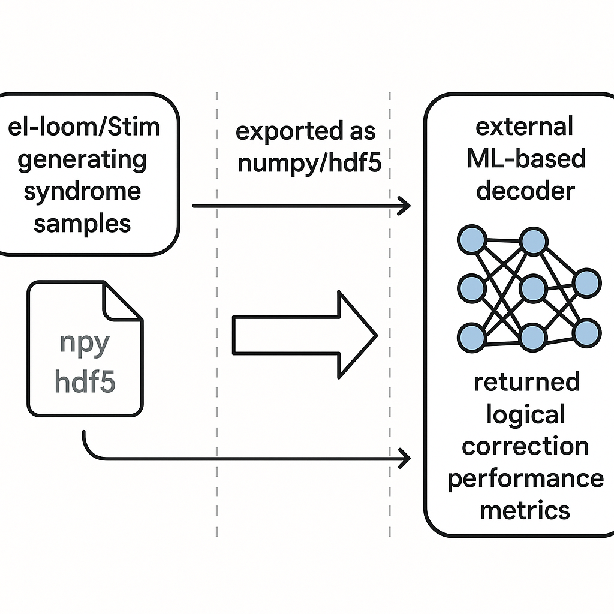
若希望直接在 el-loom 之內實作一個 prototype decoder，可以實作一個介面類別，例如：
from loom.decoders import BaseDecoder
class MyCustomDecoder(BaseDecoder):
def __init__(self, code, params):
super().__init__(code)
self.params = params
# 可於此建構 syndrome graph, precompute tables, etc.
def decode(self, syndrome_history):
# syndrome_history: shape (T, n_stabilizers)
# 回傳一個 Pauli operator (e.g., textual or binary)
# 這裡示意 return identity (不做矯正)
return "I" * self.code.n_qubits
# 使用
decoder = MyCustomDecoder(code, params={...})
sim = simulate.Simulator(..., decoder=decoder)
此介面允許：
decode，獲得每 cycle 的恢復操作。為了讓 QEC 設計實驗可重現、可擴充，建議採用如下專案結構（示意）：
qec-project/
configs/
base.yaml
noise_asym.yaml
code_family_rect.yaml
src/
codes/
rect_surface.py
custom_topological.py
experiments/
threshold_scan.py
aspect_ratio_opt.py
decoders/
my_custom_decoder.py
data/
raw/
processed/
notebooks/
analysis_threshold.ipynb
analysis_scaling.ipynb
reports/
figures/
draft.md
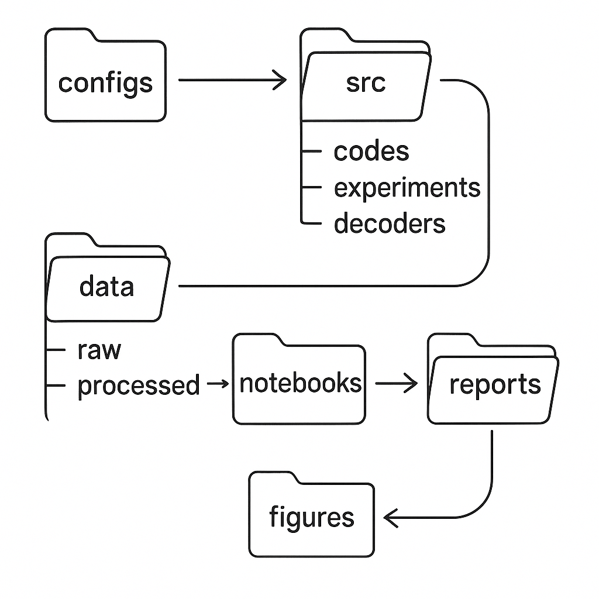
重點在於：
範例配置檔（configs/threshold_scan.yaml）：
experiment: threshold_scan
code_family: rect_surface
distances: [3, 5, 7, 9]
noise_model: asym_dephasing
p_values: [0.002, 0.003, 0.004, 0.005]
n_trials: 20000
n_cycles_factor: 1.0 # n_cycles = factor * distance
decoder: mwpm
實驗腳本讀入 config，組裝 el-loom 元件並執行：
import yaml
from loom import codes, noise, decoders, simulate
with open("configs/threshold_scan.yaml") as f:
cfg = yaml.safe_load(f)
# 根據 cfg 建立 code family, noise model, decoder, ...
# 然後進行迴圈模擬，將結果寫入 data/raw/
此種方式有利於：
本課程從穩定子碼的嚴謹數學定義出發，說明如何將其映射到 el-loom 的資料結構與模擬流程，並展示高階研究者在「自訂代碼與設計實驗」時可採用的完整 pipeline：
下一步你可以嘗試：
隨著 el-loom 與周邊工具的演進，這套工作流程可以輕易擴展至 concatenated codes、LDPC codes、subsystem codes 等更複雜的架構，在理論與實務之間搭建更順暢的橋梁。
逐字稿下載：ChatGPT_zh_L05_自訂代碼與高階研究流程_以_el_loom_進行_QEC_設計實驗.txt
完整音檔：
Segment 1:
Segment 2:
Segment 3:
Segment 4:
Segment 5:
Segment 6:
Segment 7:
Segment 8:
Segment 9:
Segment 10:
Segment 11:
Segment 12:
Segment 13:
Segment 14:
Segment 15:
Segment 16:
Segment 17:
Segment 18: